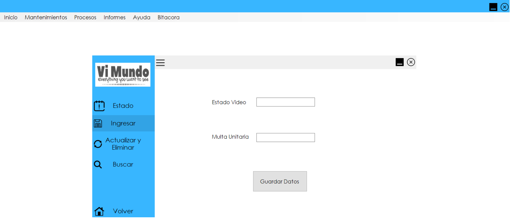
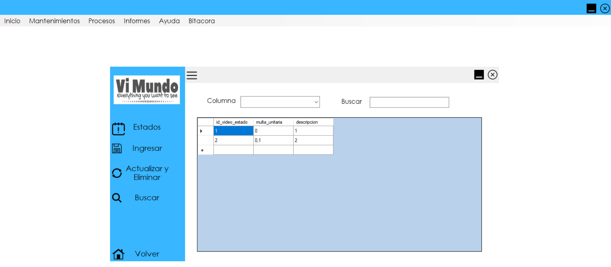

En el mantenimiento de videos se despliega un submenú en el cual podrá seleccionar entre Categoría Videos, Estado Video y Videos, estos formularios
contienen
especificamento solo la información referente a los Videos.
Al seleccionar esta opción aparecerá un formulario, en el cual tendrá las opciones:
1. Ingresar
2. Actualizar y Eliminar
3. Buscar
4. Volver
Muestra un formulario en el cual se ingresa el Estado del Video y la multa unitaria del Video, cuando ya se ingreso correctamente la información se da click en el botón Guardar Datos.
Luego aparecerá un mensaje, la cual indica que se guardaron corectamente los datos del Estado.

Contiene un formulario en el cual se despliega los estados que están registradas, en el cual se puede Actualizar y Eliminar los registros.

Para poder actualizarlo se da click en el campo que deseamos modificar o actualizar borramos el contenido y se sustituye por el dato deseado.
Cuando ya se realizo dicho cambio se da Enter y aparecerá un mensaje el cual indica que se actualizo correctamente los datos.
Damos click derecho sobre la categoria que se desea Eliminar, se desplegará la opción de "EliminarDato". Recuerde que al ejecutar esta acción usted estará borrando todo la fila no solo un campo seleccionado.

Luego automáticamente aparecerá un mensaje el cual indica que se eliminó correctamente el dato.
En este formulario se podrá Buscar que Estado tiene los videos que existen en el sistema.
El formulario contiene un menú desplegable, en el cual, se podrá seleccionar como se desea buscar el estado, por el ID, Estado o Multa.

Cuando ya se ha seleccionado la categoría del estado, se escribe ya sea el ID, el Estado o bien la multa y automáticamente cargara la información del estado que se desea.